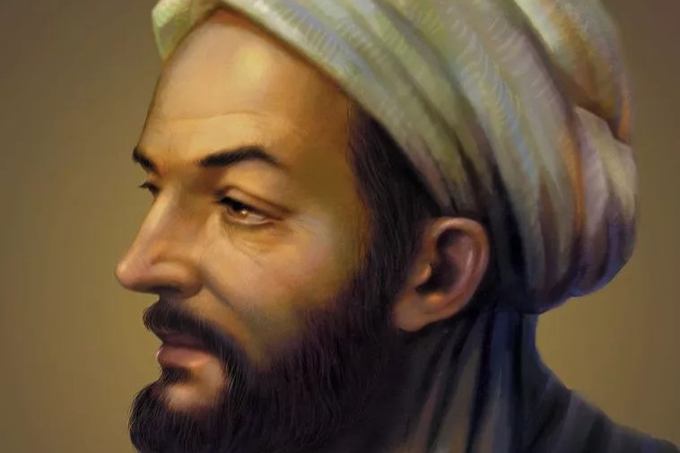

Ibnu Sina
Dokter, filosof, dan ulama yang menghubungkan iman dengan sains. Dijuluki “Bapak Kedokteran Modern”.
- Integrasi iman & ilmu kedokteran.
- Karya utama: Al-Qanun fi al-Thibb, Al-Syifa.
- Menjadi rujukan dunia selama berabad-abad.